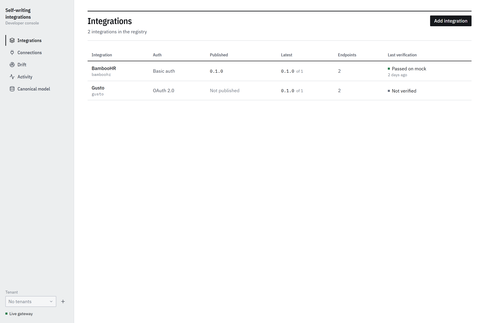
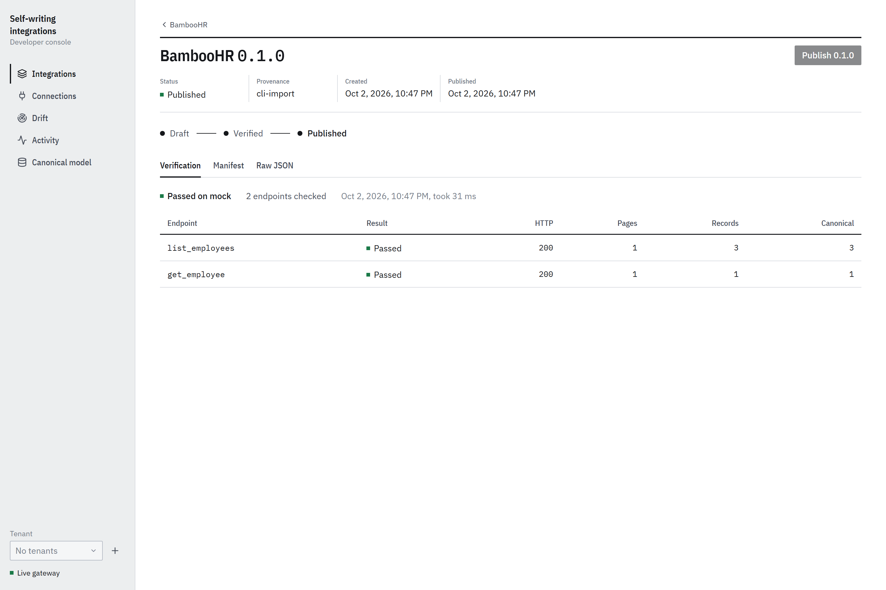
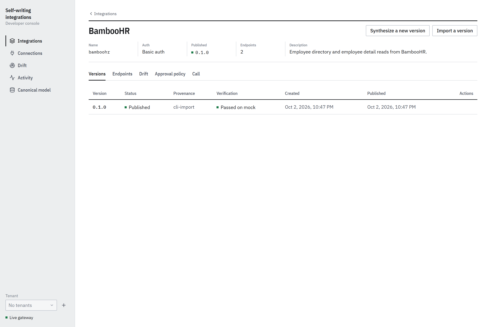
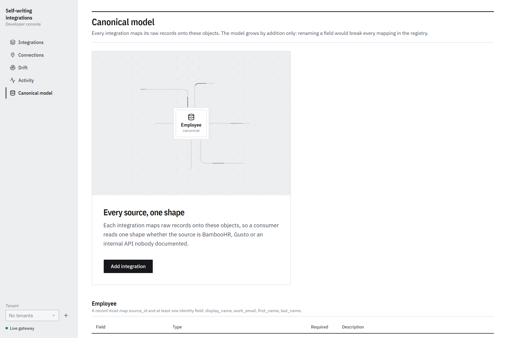

The console is a drawing office.
Every record opens with a title block, tables are ruled, and colour only ever means state. Here is what each page lets you do.
Every integration in the registry, at a glance.
One row per integration: auth scheme, the published version, the latest version, endpoint count and the last verification.

The reference manifests in the repository work as a first import.
It writes a manifest constrained to the schema and verifies it on the mock.
Status, validation, mapping and identity completeness are graded per endpoint.
The previous published version is superseded, never deleted.
A version is a record: status, provenance, verification.
The title block records what a reviewer checks before acting. The tabs beneath hold the report, the manifest and its raw JSON.


The report, the structured manifest view and the exact document the gateway interprets.
Each tab is a ruled table or a form. Nothing is hidden behind a card.
Roll back appears once a superseded version exists. It re-publishes the previous version in one step.
API-key integrations are called directly. OAuth integrations are called through a tenant connection, so tokens come from the vault.
Inject a scenario into the mock provider and watch the gateway open an incident. Restore the provider clears it.
Consent is a person's job. Refresh is not.
A tenant owns connections, credentials and audit history, each under its own vault key. The console registers one OAuth app per integration and creates connections for it.
The consent screen lists every requested scope and why: required by every endpoint, or needed by the named endpoints that use it. Then it hands the person to the provider. Nothing is granted without that step.
After consent, tokens refresh on their own. A refresh the provider rejects flips the connection to needs re-consent, destroys its credentials and notifies the tenant. The audit timeline on each connection lists consent, refreshes, failures and revocations. The Activity page shows the same audit log and the notifications for the selected tenant.
Created, consent not yet granted.
Tokens in the vault, refreshing on schedule.
The provider withdrew access. A person has to approve again.
Revoked here or at the provider.
Incidents, change requests, and the worker tick.
Anything the gateway notices opens an incident. A repair becomes a change request. Both wait here until a person or a policy decides.
The incidents table shows the incident kind, integration, endpoint, class, risk, status, how many times it was seen, when it was last seen and the change request it produced. An incident is Open, Triaged, In repair, Needs a person, Repair failed, Resolved or Dismissed.
The change requests table shows the base and candidate versions, class, risk, whether the candidate verified, its status, when it was created and who decided. A reviewer can approve, reject, start a canary, promote or abort, each with a reason.
Run worker tick runs one pass of triage, repair, canary checks and promotion. In mock mode, Simulate drift injects a scenario into the provider and Restore the provider clears it.
Autonomy, one risk class at a time.
Every repair waits for a person by default. Per integration, a checkbox per risk class lets the drift worker approve on its own.
| Risk class | For example | Default |
|---|---|---|
| low | An optional response field appears, or a rate limit changes. | Held for a person |
| medium | Behaviour changes that do not touch identity or auth, such as pagination or retry policy. | Held for a person |
| high | Anything touching auth, removed fields or canonical mappings. | Held for a person |
Ticking Approve automatically for a class does not skip the checks. The worker still verifies the candidate and runs a canary before promoting.
The canonical model, with every source around it.
Employee and Department, field by field, with type, required flag and description. The model grows by addition only.
